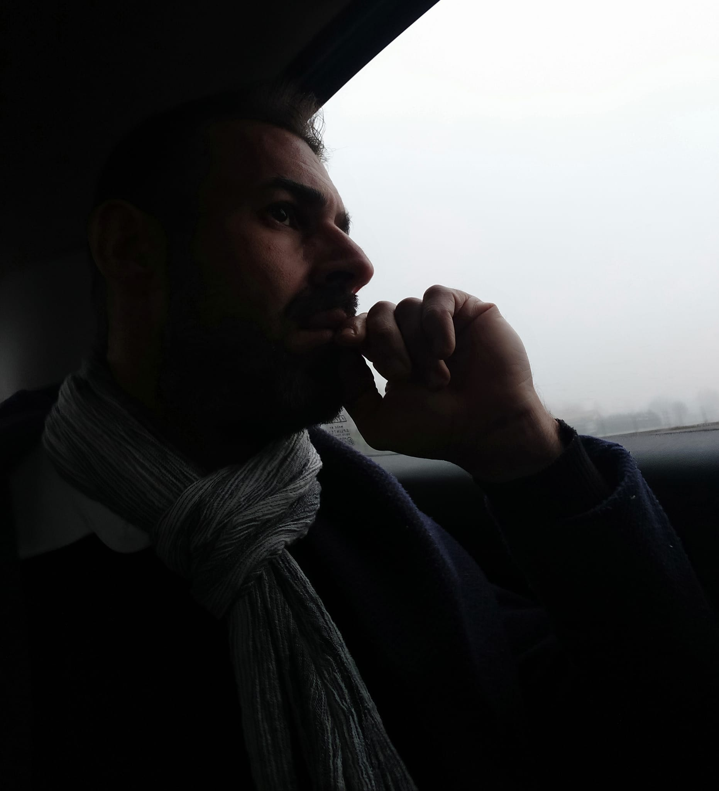

Il Tuttologo Narrante
Un viaggio oltre il sistema, tra potere, coscienza e libertà di pensiero.
Scopri il libroNarrativa, coscienza, desiderio, scienza e libertà: un catalogo di libri per chi cerca storie capaci di lasciare un segno.
Scopri i libri Inizia da un libro
Scrivo per chi sente che la realtà è più complessa di come viene raccontata. I miei libri esplorano coscienza, libertà, desiderio, tecnologia e trasformazione interiore.

Se stai scoprendo per la prima volta i miei libri, questo è probabilmente il punto di partenza migliore.
Un thriller psicologico intenso dove attrazione, controllo e desiderio si trasformano in una dinamica capace di cambiare tutto.
★★★★★
“Bellissimo, letto tutto d’un fiato.
Rimarrà impresso nella memoria.”
— Luca C.
Un viaggio oltre il sistema, tra potere, coscienza e libertà di pensiero.
Scopri il libroUn percorso interiore tra risveglio, consapevolezza e trasformazione personale.
Scopri il libroUn invito a ritrovare dentro di sé la forza per guarire, cambiare e rinascere.
Scopri il libro
Una storia distopica sul controllo digitale, la libertà mentale e l’identità.
Scopri il libroUn racconto divulgativo per avvicinarsi alla fisica e al mistero della realtà.
Scopri il libroUna storia intensa tra desiderio, scelte, emozioni e verità nascoste.
Scopri il libroQuesto sito non è solo una vetrina di libri. È uno spazio aperto a chi vuole leggere, riflettere, fare domande e condividere il proprio punto di vista.
Puoi iscriverti agli aggiornamenti, inviare una domanda, seguire i nuovi articoli del blog e partecipare a un percorso fatto di libri, esperienze reali e riflessioni.
Entra nella CommunityGiuseppe Lo Iacono è un autore indipendente che attraverso la narrativa e la riflessione esplora le grandi domande dell'esistenza umana.
Nei suoi libri convivono mondi apparentemente lontani: coscienza e tecnologia, desiderio e libertà, spiritualità e società, scienza e immaginazione. Ogni storia nasce dal desiderio di guardare oltre le apparenze e di interrogare ciò che spesso viene dato per scontato.
Più che offrire risposte definitive, i suoi libri invitano il lettore a sviluppare uno sguardo critico, a coltivare la curiosità e a intraprendere un percorso personale di scoperta.
Dalla narrativa psicologica alla divulgazione scientifica, dai temi della trasformazione interiore alle riflessioni sul rapporto tra individuo e sistema, il suo lavoro è guidato da una convinzione semplice: ogni cambiamento autentico nasce da una domanda sincera.
Una riflessione semplice su coscienza, cambiamento e libertà personale.
Leggi il blogQuanto spazio lasciamo davvero alla nostra attenzione?
Leggi il blogQuando la scienza diventa anche una domanda filosofica.
Leggi il blog“Una volta che inizi a leggere non riesci a smettere.”
LAETITIA VOLPE — La Teoria del Desiderio
“Bellissimo, letto tutto d’un fiato. Rimarrà impresso nella memoria.”
Luca C. — La Teoria del Desiderio
“Non è il classico romanzo sul desiderio o sulle relazioni. È qualcosa di più lucido e profondo.”
Mario — La Teoria del Desiderio
Per collaborazioni, recensioni, interviste o informazioni sui libri puoi contattarmi direttamente.
📧 lgiuseppe38@yahoo.com